Insinkerator Installation in Madison, WI
From quick swaps to first-time disposal installs, our Madison, WI plumbers set up InSinkErator units that run quiet and drain fast.
- Factory-Trained Mounting Techniques
- Guaranteed Work
- Prompt, Local Service
- Expert, licensed plumbers
Professional Insinkerator Installation in Madison, WI.
Our plumbers bring common Badger and Evolution models on the truck so most installs finish in one visit.
Your Local Source for Insinkerator Installation in Madison, WI
HKV Plumbing installs InSinkErator food waste disposers in kitchens of every age, from older ranch homes to brand new builds. We check the sink flange, the trap arm height and the electrical supply before the new unit goes in, so it drains properly and does not vibrate loose.
Our expertise includes:
- Complete testing for leaks and function
- Testing for leaks and operational efficiency
- Careful electrical and plumbing connections
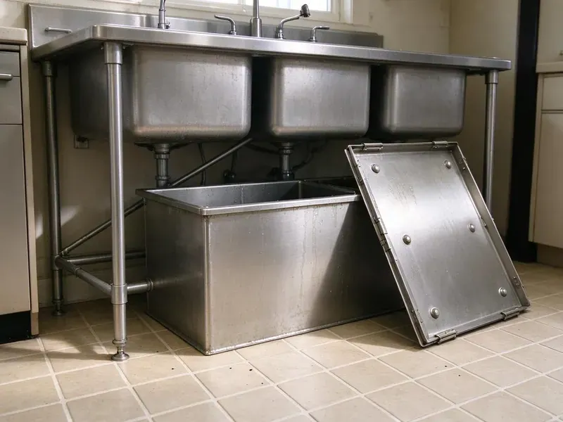
Additional Kitchen Plumbing Services in Madison, WI
Our kitchen plumbing services in Madison, WI cover sinks, disposals, dishwashers, and grease traps so your kitchen keeps running without backups or leaks.
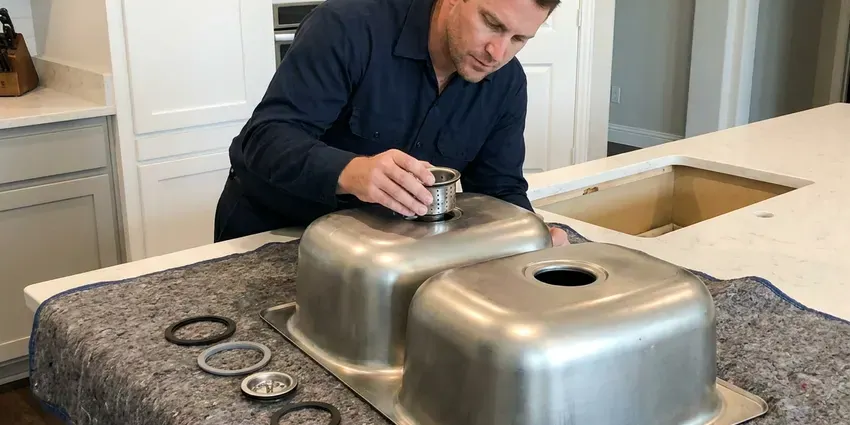
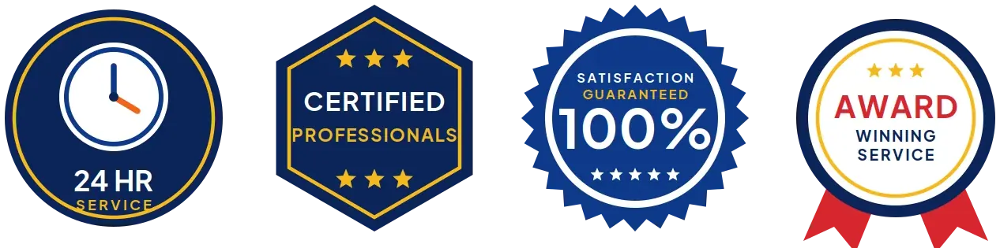
Local kitchen sink installation by HKV Plumbing, Madison
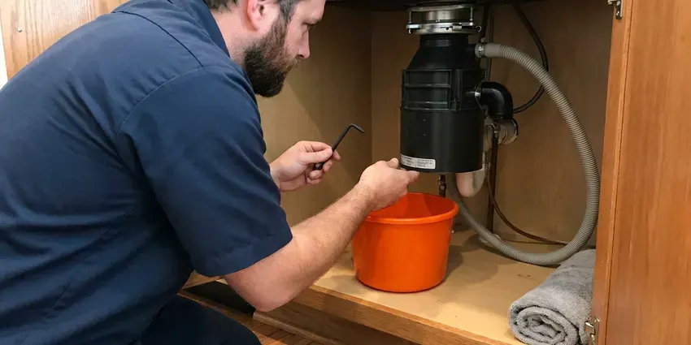
Garbage Disposal Repair in Madison
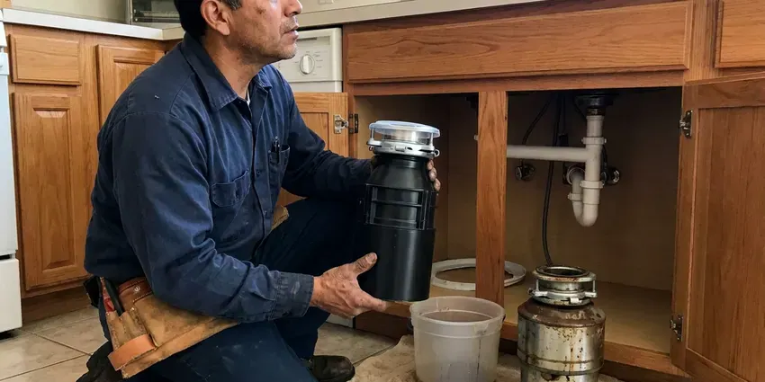
Garbage Disposal Replacement in Madison
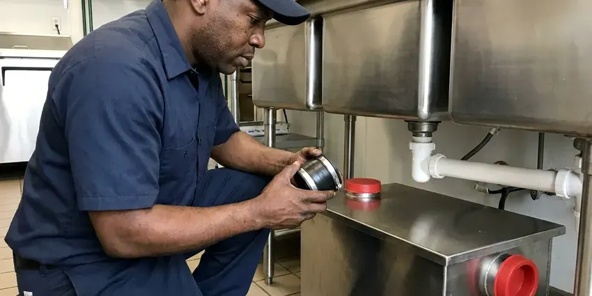
Grease Trap Installation in Madison
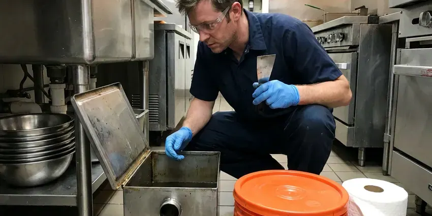
Professional grease trap cleaning, Madison
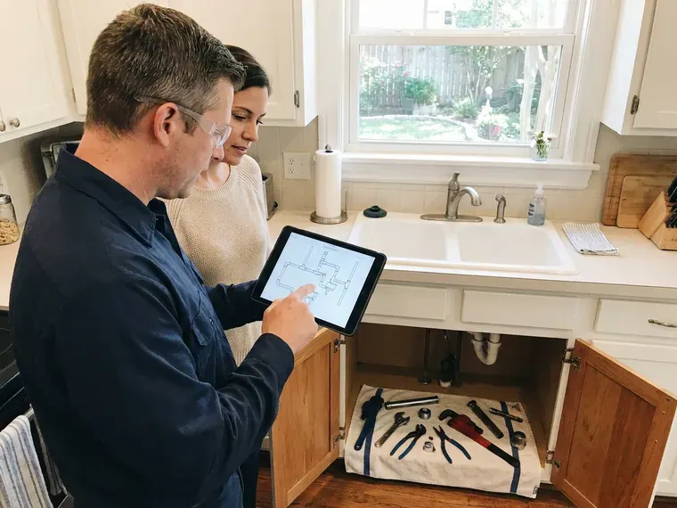
Customers
Why Choose HKV Plumbing for Insinkerator Installation in Madison, WI?
Choosing HKV Plumbing for your Insinkerator installation means choosing reliability and professionalism. We focus on meticulous execution to prevent future issues and ensure your unit performs as expected.
- Clean Mounting, Every sink flange gets fresh plumber's putty or a gasket seal so the bowl stays dry.
- Right-Sized Motors, We recommend horsepower based on household size, cooking habits and whether you have a septic system.
- Customer Satisfaction, Your satisfaction is our priority, and we stand by our work with solid guarantees and attentive service.
Citywide Coverage
No matter your location in Madison, our reliable Insinkerator installation services are just a call away. We make it simple to get professional plumbing help throughout Madison, WI.
Experienced Team
Our plumbing team has broad experience with all Insinkerator models, from basic Badger units to advanced Evolution series. They are trained to handle various kitchen sink configurations and electrical requirements.
Safety-First Approach
We focus on safe and compliant Insinkerator installations, carefully checking all electrical circuits, grounding, and drain connections. Our work meets all local Madison, WI building codes, providing you with a secure and worry-free operation.
Trusted Certified Madison Plumbing Services Professionals
At HKV Plumbing, we take pride in providing licensed, certified plumbing services throughout Madison, WI. Backed by recognized industry credentials, our experienced plumbers combine technical skill with genuine customer care. Whether it is repair, installation, or maintenance, we follow strict safety and quality standards to deliver long-lasting results you can trust.
Call Us Now PHCC Plumbing Contractor Recognition
PHCC Plumbing Contractor Recognition Better Business Bureau (BBB) Accreditation
Better Business Bureau (BBB) Accreditation Angi Certified Pro
Angi Certified Pro ISO 9001 Quality Management Certification
ISO 9001 Quality Management CertificationDependable Insinkerator Installation Services in Madison, WI
Hard Water and Mineral Considerations in Madison
Water softeners are a common feature in many Wisconsin homes, helping protect water heaters, fixtures and appliances from scale. Hard water leaves scale on disposal grind rings, sink flanges and drain tailpieces. Over time that buildup can make a disposal noisy and cause slow drainage. We inspect the drain line for scale and debris before connecting a new unit. If heavy buildup is present, we recommend cleaning or replacing the trap and tailpiece at the same time. Stainless steel grind components on Evolution models resist corrosion better in hard water.
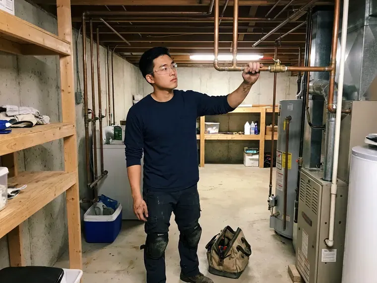
Emergency Insinkerator Installation Services in Madison, WI
When your existing garbage disposal fails completely, it can disrupt your kitchen and daily routine. HKV Plumbing offers emergency Insinkerator installation services in Madison, WI to quickly restore your kitchen's function. We prioritize urgent requests, bringing a full range of Insinkerator models and tools to get your new unit installed without delay. Our rapid response minimizes inconvenience and ensures your kitchen back in working order as soon as possible.
Upgrading Your Insinkerator in Madison, WI
If you're upgrading from an older, less powerful garbage disposal to a newer, more capable Insinkerator model, we can help. This service often involves removing the old unit, assessing the existing plumbing and electrical for compatibility, and installing the new, more powerful disposal. We ensure the new unit fits correctly under your sink and that the drain line can handle increased output. Upgrading can significantly improve your kitchen's waste management in Madison, WI, especially with tougher food scraps.
New Construction Insinkerator Installation in Madison
For new home builds or major kitchen remodels in Madison, we provide comprehensive Insinkerator installation from scratch. This service involves installing the necessary plumbing and electrical rough-ins, then fitting the Insinkerator unit once the cabinetry and sink are in place. We coordinate with other contractors to ensure a seamless integration into your new kitchen design, adhering to all local building codes for a perfect finish.
Insinkerator with Air Switch Installation in Madison
For added convenience and a cleaner look, many homeowners choose an Insinkerator with an air switch. This allows the disposal to be activated by pressing a button mounted on the countertop, rather than a traditional wall switch. We carefully install these air switches, integrating them seamlessly with your new Insinkerator unit. This includes drilling the countertop if necessary and making a safe, reliable connection in your Madison kitchen.
Dishwasher Connection and Air Gap Setup in Madison
Most InSinkErator units have a dishwasher inlet with a factory knockout plug inside. We knock that plug out, clear the debris and connect the dishwasher drain hose with a proper clamp. We then install or verify an air gap or high loop so dirty sink water cannot siphon back into the dishwasher. Forgetting the knockout is one of the most common DIY mistakes and leads to a dishwasher that will not drain. We test both appliances together before we leave.
Standard Insinkerator Badger Series Installation in Madison
The Insinkerator Badger series is a popular choice for many Madison homeowners due to its reliability and affordability. Our service includes careful removal of your old unit, precise mounting of the new Badger model, secure electrical hookup, and connection to your existing drain lines. We create a watertight seal at the sink flange and test the unit thoroughly for proper function, making sure it grinds efficiently and drains correctly before we leave your Madison home.
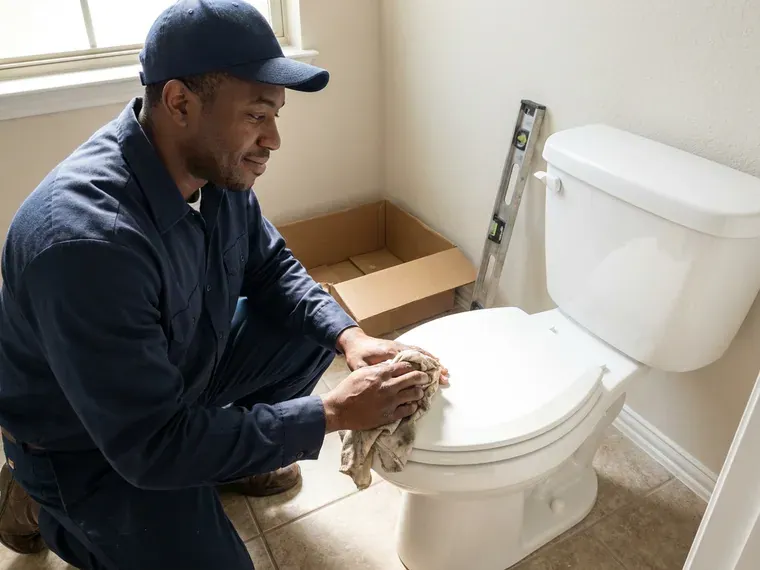
Insinkerator Installation for New Sink Setups in Madison, WI
Installing an Insinkerator as part of a new kitchen sink setup in Madison, WI requires careful coordination with other plumbing components. We work around your remodel schedule, ensuring the disposal is installed at the correct stage of construction. This includes careful measurement for proper alignment with the new sink drain, routing electrical lines, and connecting to the main waste line. Our goal is a clean, professional installation that complements your new kitchen's look and function.
Insinkerator Installation Near Me in Madison, WI
When you need reliable Insinkerator installation close to home, remember HKV Plumbing. We understand the plumbing challenges and building styles found in Madison, allowing us to provide tailored and effective solutions. Our commitment is to deliver expert service right to your neighborhood.
If you are searching for reliable "Insinkerator installation near me" in Madison, WI, look no further than HKV Plumbing. Our local team is ready to provide prompt and efficient service to all residents and businesses in the area. We understand the plumbing needs of Madison homes and are equipped to handle any installation with expertise.
HKV Plumbing at a Glance
- Licensed and insured plumbers serving Madison, WI
- 24/7 emergency service with same-day scheduling
- Upfront, flat-rate pricing before work begins
- 4.8-star rated by 448+ Wisconsin customers
Madison Map
Madison Information
- Population
- 280,305
- Area codes
- 608/920/262
- Service area
- Madison and communities within 40 miles
- Nearby
- Janesville, Waukesha, Wauwatosa, West Allis
Mineral buildup and older drain lines in many homes make a properly sized and correctly mounted InSinkErator essential for avoiding scale, clogs and leaks under the sink.
Expert Services
Trust our professionals for reliable HKV Plumbing solutions in Madison, WI.
Our Specialized Plumbing Services in Madison, WI
At HKV Plumbing, we provide a complete range of plumbing services across Madison, WI. From leak detection to full system installations, our team ensures fast, precise, and affordable service for both residential and commercial properties. Explore our core services below:
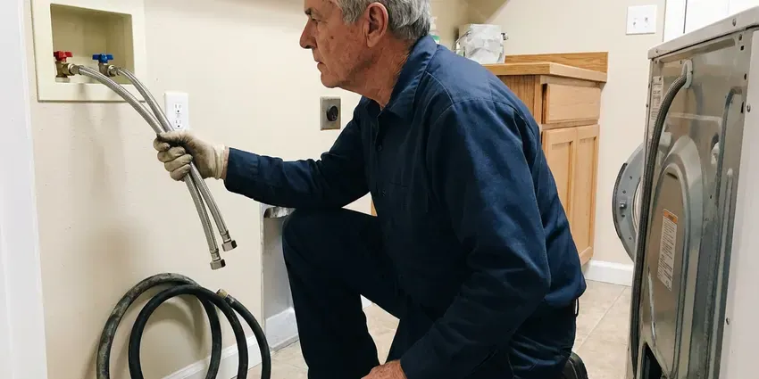
Plumbing Repair near Madison
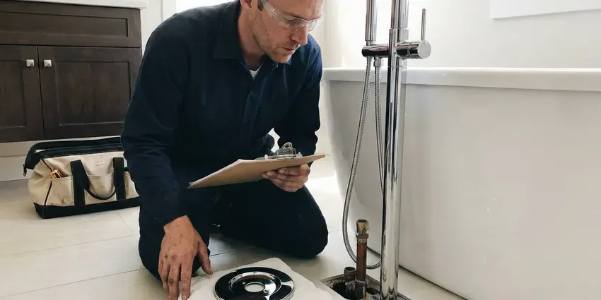
Bathroom Plumbing in Madison
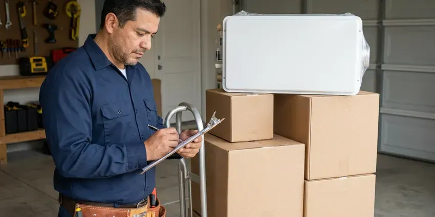
Plumbing Installation near Madison
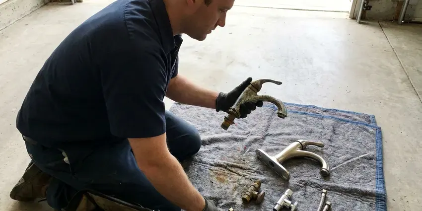
Local plumbing replacement by HKV Plumbing, Madison
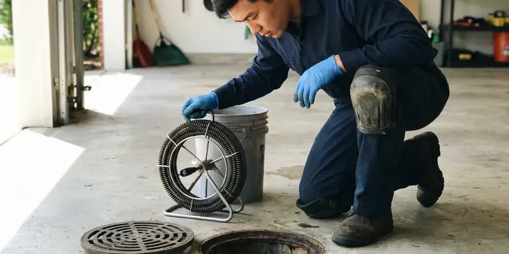
Local drain services by HKV Plumbing, Madison
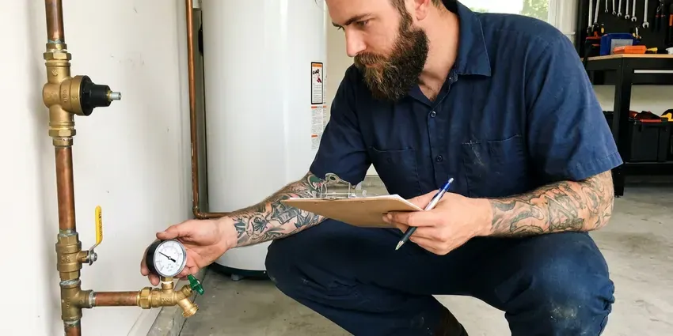
Plumbing Maintenance in Madison
How Our Insinkerator Installation Process Works in Madison, WI
We follow a proven method to ensure every Insinkerator installation in Madison, WI is completed to the highest standards of quality and safety.
Request a Quote
Call (414) 432-4641 or fill out our online form to schedule your Insinkerator installation. We'll discuss your needs, answer any questions, and provide a clear quote.
Old Unit Removal
Our technicians will arrive on time to carefully remove your existing garbage disposal, if applicable. We ensure all connections are safely disconnected and the area is prepared.
New Installation
We expertly install your new Insinkerator, connecting it to your plumbing and electrical systems. We verify all seals, mounts, and wiring are secure and up to code.
Frequently Asked Questions About Insinkerator Installation in Madison
The cost for Insinkerator installation in Madison, WI typically ranges from $200 to $400 for labor, not including the unit itself. This can vary based on the complexity of the installation, such as electrical modifications or new plumbing runs, and whether an old unit needs to be removed. We provide upfront pricing after assessing your specific situation.
While some homeowners attempt DIY installation, it's often best left to professionals. Improper installation can lead to leaks, electrical hazards, or damage to the unit or your plumbing. Professional installation ensures safety, proper function, and adherence to local codes.
Yes, we understand that a broken garbage disposal can be a major inconvenience. We offer emergency Insinkerator installation services in Madison, WI to quickly replace a failed unit. Just call us, and we'll dispatch a plumber as soon as possible to restore your kitchen's functionality.
HKV Plumbing provides a warranty on our labor for Insinkerator installations, usually covering issues related to workmanship for a specific period. The Insinkerator unit itself comes with its own manufacturer's warranty, which varies by model, often ranging from 1 to 10 years. We will provide details on both warranties.
Most standard Insinkerator installations take between 1 to 2 hours. If there are complications, such as significant plumbing modifications or electrical work, it might take a bit longer. We aim for efficiency without compromising quality.
A straight swap usually takes about one hour. First-time installations or jobs that require new wiring or drain changes can take two to three hours.
Choosing the right Insinkerator depends on your household size, typical food waste volume, and desired noise level. Smaller households might do well with a Badger series, while larger families or those who entertain frequently might prefer the quieter, more powerful Evolution series. Our plumbers can help you pick the best model for your needs.
The Badger series are entry-level, dependable disposals for basic grinding needs. The Evolution series offers advanced multi-stage grinding, quieter operation, and larger capacities, designed for tougher food waste and a quieter kitchen. Your choice depends on your usage and budget.
What People Are Saying About Our Plumbing Experts?
Patricia H.
We had a slab leak that two other companies could not find. HKV Plumbing located it in under an hour, explained our options, and the price matched the quote to the dollar.
Slab Leak Repair · Wauwatosa, WIJames P.
Our commercial plumbing system had a leak under the sink, and HKV Plumbing handled it professionally. The plumbers arrived quickly and restored everything without disruption to our customers.
Commercial Plumbing · Waukesha, WILaura S.
I scheduled a water heater replacement, and the team made the process smooth and affordable. The new unit works perfectly, and they cleaned up after completing the job.
Water Heater Replacement · Oshkosh, WISofia M.
Two new toilets installed in one visit, no mess left behind, and the tech even adjusted a faucet he noticed was dripping. Fair pricing and really friendly.
Toilet Installation · Oshkosh, WIRobert G.
The trenchless sewer replacement saved our front yard. They walked us through the camera inspection footage first so we knew exactly what we were paying for.
Sewer Line Replacement · Janesville, WIMark T.
When our office needed drain cleaning, HKV Plumbing provided quick, reliable service. The plumber arrived on time and made sure every drain flowed perfectly before leaving. Very satisfied.
Drain Cleaning · Wauwatosa, WI